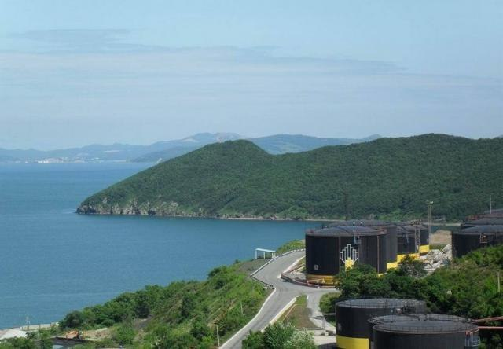

Территория Приморского края входит в зону широколиственных лесов, которая делится на две провинции: горная часть (Южно-Сихотэ-Алиньская горная провинция) и равнинная часть (Уссуро-Ханкайская провинция, Восточно-буроземно-лесной области). Рельеф местности, климатические условия и растительность способствует формированию горных почв и речных, озерных долин и равнин.Зональным типом почв являются бурые лесные.На большей части территории края развиты горные почвы, но так как они сельскохозяйственного назначения не имеют, то изучены значительно меньше, чем почвы равнин. Почвы горных территорий занимают в Приморском крае 67,74 % территории.

Большая часть почв равнин имеет сельскохозяйственное значение. Занимают они 32,26% территории края.Наиболее распространенными являются 3 типа почв: остаточно-пойменные (21,6%), буро-подзолистые (24,8%) и бурые лесные (20,1%).В настоящее время качество земель сельскохозяйственного назначения продолжает ухудшаться. Одним из эффективных методов, определяющим повышение продуктивности земель, является обеспечение рационального земле - и природопользования.Почвы обследованных районов Приморского края весной и осенью не загрязнены трефланом и метафосом, их максимальные значения не превысили санитарных норм.
Приморский край является одним из самых лесных регионов Российской Федерации. По своему богатству и разнообразию Приморские леса уникальны.
В Приморском крае произрастает около 400 видов деревьев, кустарников и лиан. Всего в Приморском крае произрастает 2592 вида сосудистых растений из 800 родов и 168 семейств.
На территории Приморья отмечен наибольший уровень видового эндемизма и своеобразия флоры среди других регионов Дальнего Востока. Эндемики составляют 3,4% от общего числа сосудистых растений.
Почти 500 видов сосудистых растений Приморского края не встречаются в других регионах Дальнего Востока. В Красную книгу Российской Федерации внесено 89 видов сосудистых растений Приморского края, в Красную книгу Приморского края - 343 вида. За период 2009-2010 годов изменений по количеству редких и находящихся под угрозой исчезновения растений (в части деревьев и кустарников) не произошло.